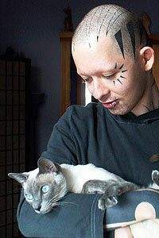

hadowrun
je RPG hra zasazena do prostredi imaginarnich mest v dobe priblizne
okolo roku 2050-2065.
Magie se vratila do sveta, nekteri lide a zvirata a rostliny
zmutovali do podoby bajnych tvoru (orkove trpaslici, trolove, elfove,
draci...), jini vylepsuji sve telo chromem, oceli nebo
nanotechnologiemi.
Zmutovaly take nemoci, vratil se mor. EU i USA se rozpadly na male staty, ovladane korporacemi, mafiemi, nebo samozvanymi vladami. Viry suzovany Internet se postupne zmenilna ve virtualni realitu zvanou MATRIX, ve ktere protekaji megaterabajty informaci za vterinu.
Typicke hracske postavy jsou lide nebo metalide ve stinech, osoby, ktere ziji spinavou praci. Odprodeje drog, pres zabijeni a vydirani, az po "kladne" hrdiny bojujici proti znecistovani
planety a rasovemu utlaku...
>>>>["Chces si hrat na stiny?
Tak teda poslouchej, kamo; pak si to preber a pouc se z toho co nejvic,
ponevadz nevedomost zabiji rychlejc nez kulovej blesk."]<<<<
~ Ess El El, hadi saman <18:12:45/11-O7-42>
>>>>[SHA-DO-RUN : vitejte ve svete zvrhlych elfu, drubezich samanu a neschopnych riggeru.]<<<<
~ Sorbak, the gamemaster <15/09/04 00:38:40>
Povidky, doplnujici pravidla a jine linky
Seznam nasich shadowrunu - u mnoha dobrodruzstvi jsou poznamky, obsahujici hlasky z runu, nekolik poslednich je sepsano i do podoby (vice mene) povidek
Velice strucny vytah dulezitych pravidel - v budoucnu zrejme velice casto aktualizovana stranka, s presnym znenim nekterych mene pouzivanych, nicmene potrebnych pravidel.
shadowrun.webz.cz - jiz neudrzovana stranka, na ktere jsem sesbiral par neoficialnich doplnujicich zdroju z ruznych nadseneckych webu. Veskere doplnky jsou neoficialni, tak je berte z rezervou, ne vsechno jde hrat.
Kuchaøka pro tvorbu postavy - vyrobená Sorbákem a mnou tro¹ku upravená
Sorbakuv web o shadowrunu - stranka spoluhrace, spolugamemastera a psychotickeho web desingera :)
Elfuv web o shadowrunu - stranka spoluhrace a psychotickeho web desingera :)
Postavy, ktere hrajeme (PC)
Od poslední aktualizace stránek se mnohé zmìnilo. Doufám, ¾e se mi podaøí tyto zmìny nìjak vtìstnat do nìkolika dal¹ích textù, na co¾ jsem zatím nemìl náladu ani èas, tak¾e vydr¾te. Nicménì postavy starého teamu jsou mrtvé, nebo se zmìnily v NPC a ¾ivot jde dál.
Momentálnì exitují dva svìty, obsahující dvì rùzné herní vìtve a rùzné postavy: jedna z nich je Seattle, které vytvoøil MacLinx, druhá je Ruská, kterou zatím vedou Prawitz a Sorbák.
Po témìø osmi letech gamemasterování si koneènì mù¾u zahrát postavu :).
Ruská vìtev:
Podorobnìj¹í popisy o tom, co se dìje a co se ji¾ stalo najdete v sekci
Seznam nasich shadowrunu
PC
Tristan Thorn øeèený Muru - Autor herbáøe neobvyklé kvìteny, astrální výzkumník, odborný asistent katedry parabiologie na Petrohradské Magické Univerzitì. Konzusltant v oboru stravy parazvíøat v Petrohradské ZOO. Autor projektu, jeho¾ cílem je spojení astrálních rovin s matrixem (Q: Hele mysl¹, ¾e nìkde existuje astrální rovina Øí¹e divù, jako v Alence? A: Jasnì, je to jedna z mejpevnìji definovaných a velice mocných rovin... Q: Tak¾e ve¹keré mentální aktivity èlovìka jsou schopné vytváøet astrální roviny? ....)
Obludin - zamìstnanec petrohradské ZOO, jako odborník na moøské hlubiny. Majitel nìkolika bioware vylep¹ení, která mu posupnì nìjak pøerùstají pøes hlavu. Ze zaèátku to byly jen plovací blány a ¾ábra, teï u¾ mu dokonce narostly ¹upiny, v dùsledku èeho¾i zezelenal, upadly mu u¹i a ka¾dý z nás, èeká, kdy mu naroste ocas. (Jednou ráno se probudím a zabiju to - Anatolij o nem)
Anton - chlápek ze Sibiøského Surgutu, který miluje technické hraèky a jak se zdá, pova¾uje (meta-)lidské tìlo za jednu z nich. Pokud potøebujete doktora nebo riggera, tak si za ním skoète a pozdravujet jej od Murua. Jen si dejte pozor na to, abyste jej chytili mimo nìkterou z jeho nálad, proto¾e jinak se budete bavit s o¾ralým maniodepresivním ruským smraïochem a ne s kapacitou v oboru. Holt ka¾dej jsme nìjakej. (Jo a je¹tì jsem vám zapomìl øíct, ¾e megafrkodr»ák mám samozøejmì v ...) - bacha soubor je u Sorbaka na webu a je to .xls
Anatolij - tak tohle je vá¾nì "hustá" postava. Ne ¾e bych se chtìl posmívat, ale tohle je pøesnì jedna z typických Burkhárových postav. Ten èlovìk má vá¾nì naprosto neomezené ego :). Tedy pøedstavte si èlovìka, který umí naprosto v¹e a ve v¹ech svých fyzických a mentálních atributech dosahuje hranièniho maxima. Tu¹ím, ¾e právì tohle vedlo Prawitze k tomu, aby Anatolije pøejmenoval na Van Helsinga ("... i nastala veliká mela mezi pøí¹erami, která zkonèila tím, ¾e v¹echny ode¹ly svornì házet kameny na dùm VanHelsingùv").
NPC
Thomas Tamavenk a Lizzy - AK - Tamavenková - troll a orèka - on je majitelem nadnárodního konsorcia na výrobu dronù, ona je majitelem Kala¹nikových patentù
Eva Tarkovská - elfka - prodavaèka talismanù, doktorka archeologie pùsobící na Petrohradksé univerzitì
Josif Goldstein - trpaslík, ruský ¾id - schopný za patøièný obnos vyrobit fale¹né doklady
Michail Antonoviè Gorodìvský - ork (kouzelník) - radní na Petrohradské radnici
cpt Pearce - èlovìk - velitel speciální jednotky Petrohrad
Drtiè - troll - shadowrunner, s tøíhlavòovým plamenometem
Vìtev Seattle:

Podorobnìj¹í popisy o tom, co se dìje a co se ji¾ stalo najdete v sekci
Seznam nasich shadowrunu
PC
EVA1 - fyzický adept, ninja, tichý zabiják 2054(tm). Ple¹atá, ¹lachovitá a bezpohlavní bytost s tragickou minulostí. (Ty EVO, se¹ sice fajn holka (?), ale o¹klivá se¹ jak sedum ne¹tìstí).
(An)Gus - vyslou¾ilec z Cizinecké legie, majitel kybernetické ruky a komplexu více-ménì cennosti (ten co kope do dveøí) - bacha soubor je u Sorbaka na webu a je to .xls
Felix - vyslou¾ilec z cizinecké legie, majitel kybernetických oèí a kouzelník (je to komunista, zapaluje slab¹í soudruhy)
NPC
MAXmilian Urscumung - ork - pøekupník zbraní
GAN - trpaslík - decker, který ¾ije v trpaslièích tunelech pod mìstem a nesná¹í orky
Ellis - trpaslice -i poulièni doktorka
Soul Box - lokace v trixu - ¾oldácký server, podobný dne¹ním diskuzákùm, ale v 3D a daleko technicky vyspìlej¹í
22/09/04 00:49:11